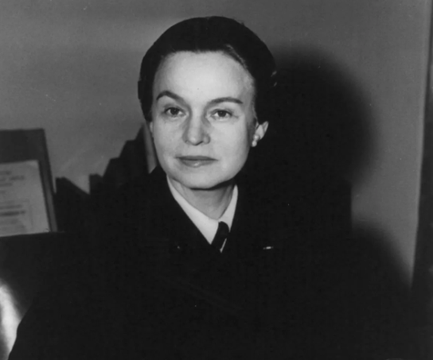
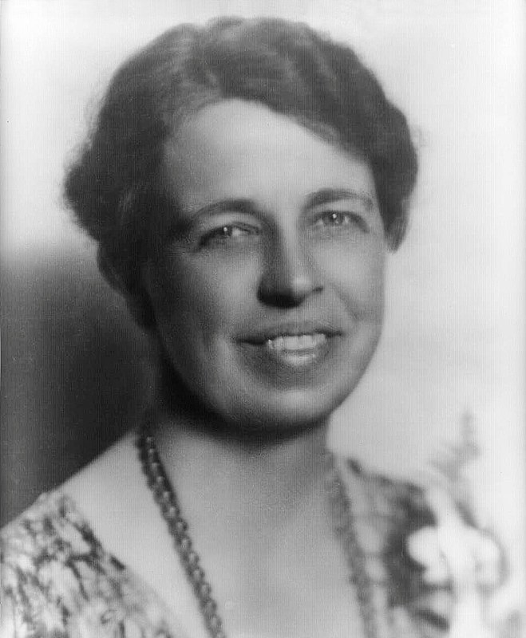
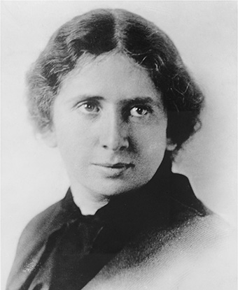

Discover the lasting legacy of women's wartime experiences and their ongoing fight for gender equality

Ovelta Culp Hobby is the first director of the Women's Army Corps during World War II, Oveta Culp Hobby was a trailblazing American leader who went on to become the first Secretary of Health, Education, and Welfare.

Eleanor Roosevelt was a very powerful American activist, diplomat, and politician. She transformed the position of First Lady under her husband Franklin D. Roosevelt's presidency and rose to prominence as a strong supporter of civil liberties, human rights, and social justice. She was instrumental in establishing the Universal Declaration of Human Rights of the United Nations.

Rose Schneiderman was a prominent American labor leader and feminist.